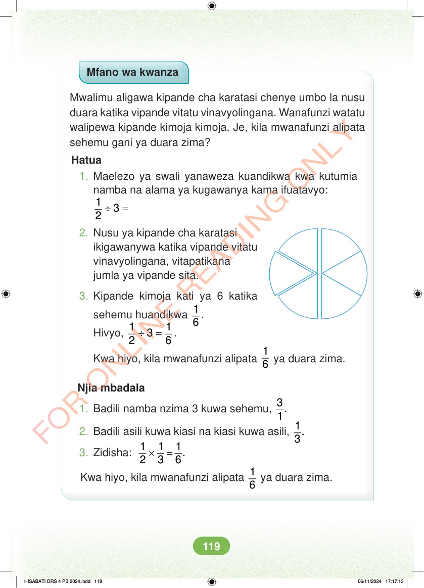

Mfano wa kwanza Mwalimu aligawa kipande cha karatasi chenye umbo la nusu duara katika vipande vitatu vinavyolingana. Wanafunzi watatu walipewa kipande kimoja kimoja. Je, kila mwanafunzi alipata sehemu gani ya duara zima? Hatua 1. Maelezo ya swali yanaweza kuandikwa kwa kutumia namba na alama ya kugawanya kama ifuatavyo: ÷ = 1 3 2 2. Nusu ya kipande cha karatasi ikigawanywa katika vipande vitatu vinavyolingana, vitapatikana jumla ya vipande sita. 3. Kipande kimoja kati ya 6 katika sehemu huandikwa 1 6 . Hivyo, ÷ = 1 1 3 2 6 . Kwa hiyo, kila mwanafunzi alipata 1 6 ya duara zima. Njia mbadala 1. Badili namba nzima 3 kuwa sehemu, 3. 1 2. Badili asili kuwa kiasi na kiasi kuwa asili, 1. 3 3. Zidisha: × = 1 1 1. 2 3 6 Kwa hiyo, kila mwanafunzi alipata 1 6 ya duara zima. HISABATI DRS 4 PB 2024.indd 119 HISABATI DRS 4 PB 2024.indd 119 06/11/2024 17:17:13 06/11/2024 17:17:13